hiddenGEM
수집품을 기록하고 공유하는 모바일 서비스 UX/UI 디자인
App · Web
Photoshop
Illustrator
UX Flow
UI Design
Visual Design
Design System

수집의 즐거움을 담은
콘텐츠 앱을 설계했습니다.
HiddenGEM은 사용자의 수집품을 체계적으로 기록하고,
공유하고, 감상할 수 있도록 설계한 모바일 콘텐츠 플랫폼입니다.
단순한 기록 기능을 넘어, 수집의 즐거움과 정리의 만족감을
함께 느낄 수 있도록 UX 흐름과 UI 구성에 집중했습니다.
2025년 상반기에 출시했고, 현재 일부가 리뉴얼된 상태입니다.
기록
수집품을 카테고리별로 담고, 카드 형태로 정리해 한눈에 볼 수 있게 했습니다.
공유
모두의 젬과 지도로 다른 사람의 수집을 만나고, 내 수집을 나눌 수 있게 했습니다.
감상
수집품 하나하나를 전시하듯 볼 수 있도록 화면과 이미지 중심으로 구성했습니다.
UX / UI Design
서비스 기획부터 구조 설계, UI·비주얼 디자인, 디자인 시스템까지 담당했습니다. (UX/UI 기여도 100%)
어떤 수집이 올라와도
전시장처럼 보이게 했습니다.
예전의 수집이 미술품, 골동품처럼 접근하기 어려운 분야였다면, 지금은 맛집 위치, 마스킹테이프, 영수증, 와인 테이스팅 기록까지 하나의 관심을 모으면 수집이 됩니다. 이렇게 다양해진 수집을 모으는 커뮤니티 앱을 목표로 했습니다.
수집의 종류가 정해져 있지 않다
카테고리 중심 구조와 리스트·카드형 UI로 어떤 수집이든 담고 정리할 수 있게 했습니다.
올라오는 이미지의 결이 제각각이다
정돈된 그리드에 책장처럼 칸이 살짝 어긋난 배치를 더해, 어떤 이미지도 전시된 것처럼 보이게 했습니다.
수집이 다양해도 앱의 인상은 하나여야 한다
미니멀한 브랜드 감각을 유지하며 아이콘, 컬러, 타이포를 일관되게 구성했습니다.
확장할 수 있는 구조와
반복 개선을 기준으로 했습니다.
나의 수집 · 추천 수집
두 영역의 정보구조를 분리해, 사용자 중심으로 확장할 수 있는 구조를 만들었습니다.
다양한 보기 방식
수집품 상세 콘텐츠 구조를 기준으로 리스트, 카드, 갤러리 등 다양한 뷰 모드를 설계했습니다.
Figma 컴포넌트
브랜드 감성과 기능 구조를 균형 있게 반영한 디자인 시스템과 UI 키트를 구성했습니다.
피드백 기반 개선
MVP 단계에서 사용자 피드백을 바탕으로 UX를 반복해서 개선했습니다.
App UI
수집을 시작하는 화면부터 카드, 상세, 커뮤니티, 지도까지 하나의 흐름으로 이어지도록 구성했습니다.
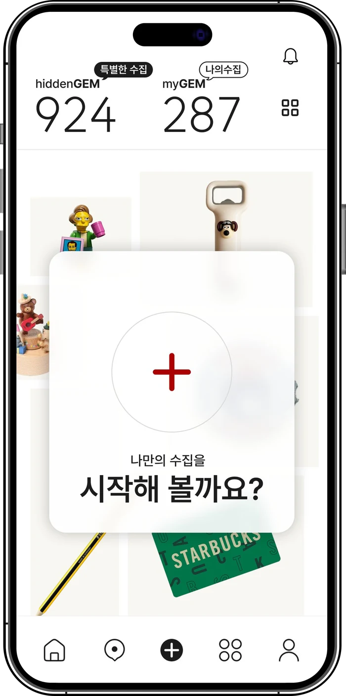
수집 시작
나만의 수집을 시작하는 첫 화면
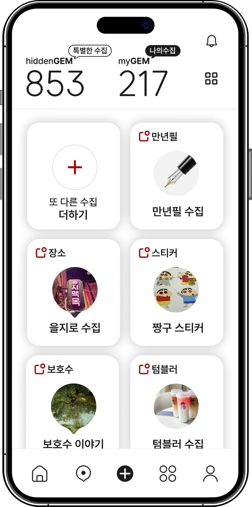
수집 목록
카테고리별 수집을 한눈에 보기
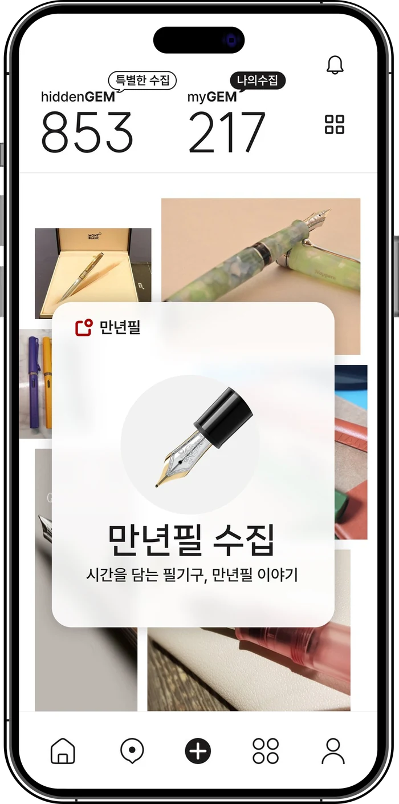
나만의 특별한 수집
나만의 시선과 시각으로 수집하다
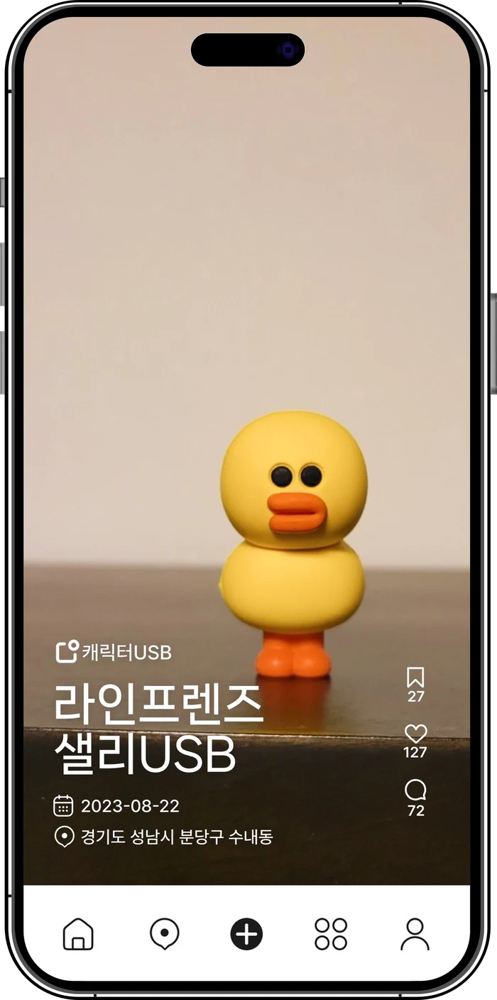
나의 수집이야기
나의 수집품을 전시하다
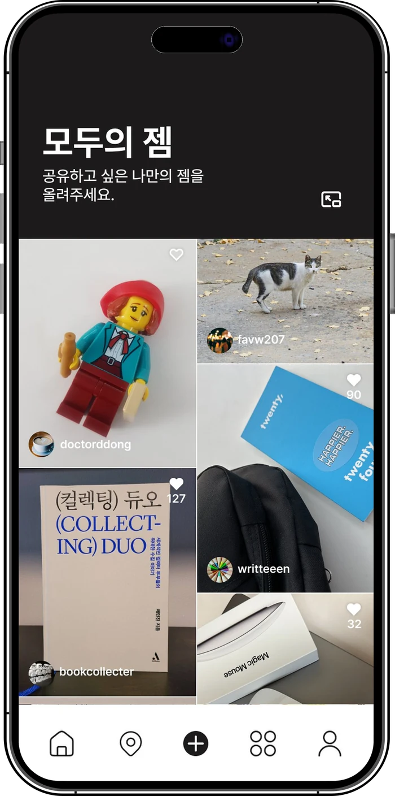
모두가 수집가
다양한 수집에 대한 커뮤니티 공간
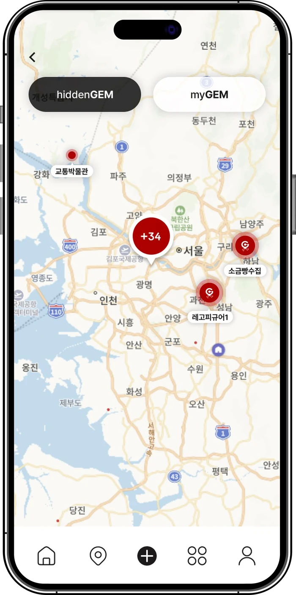
지도로 보는 수집 정보
내 주변엔 어떠한 히든젬이 있을까?
Web
앱의 수집 경험을 웹에서 소개하는 화면입니다. VALUE · COLLECT · GEM을 키워드로 서비스의 가치를 전달했습니다.
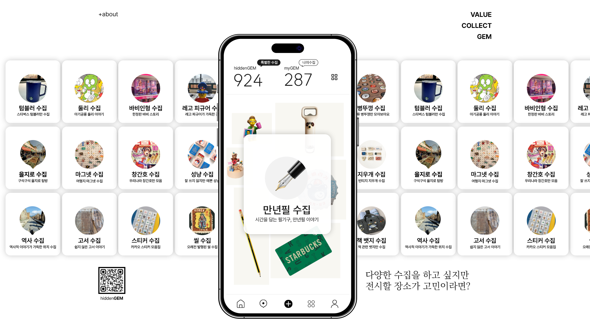
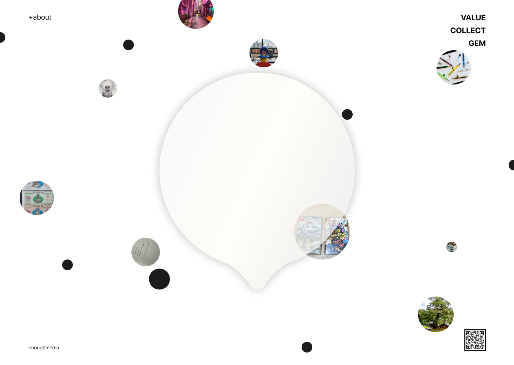
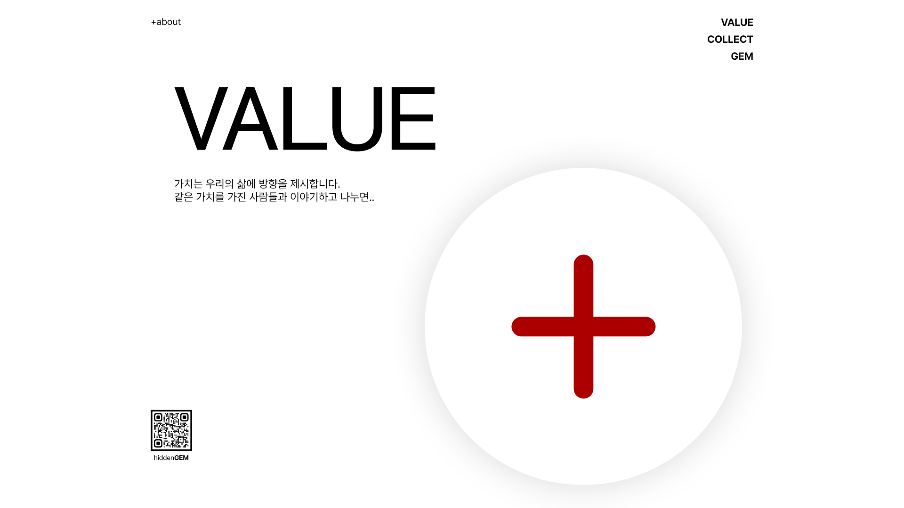
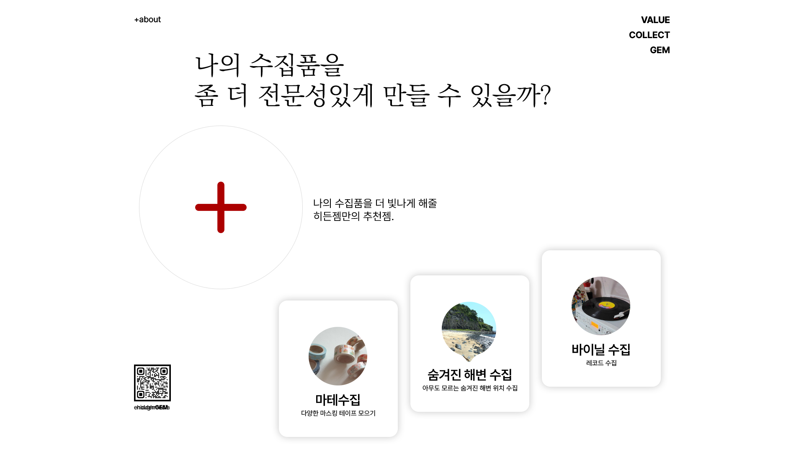
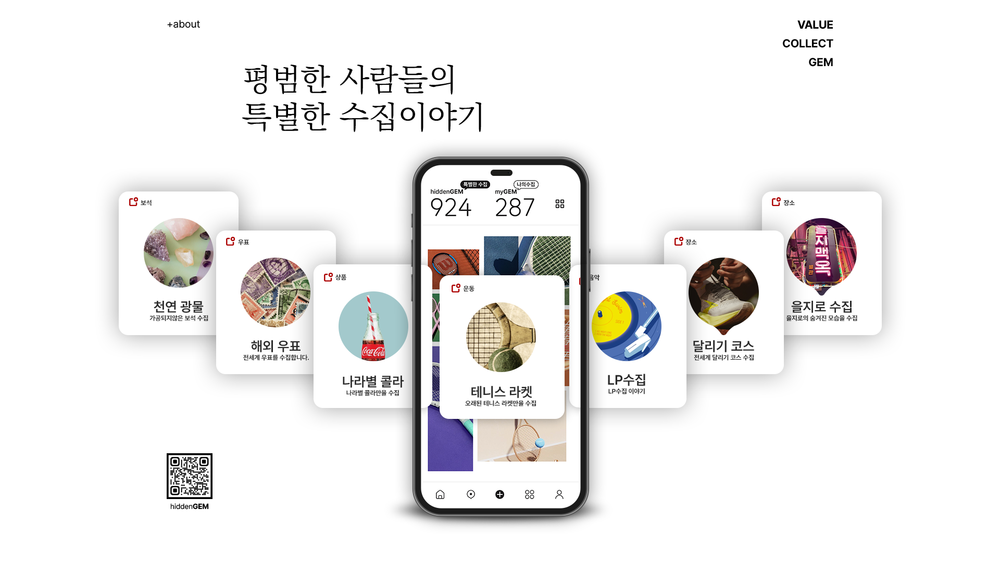
브랜드 감성을 규칙과
컴포넌트로 정리했습니다.
컬러, 타이포, 간격, 모서리 값을 정리하고 탭바, 버튼, 젬 박스, 카테고리 칩, 스탯 헤더를 Figma 컴포넌트로 만들어 화면 전체에 적용했습니다.
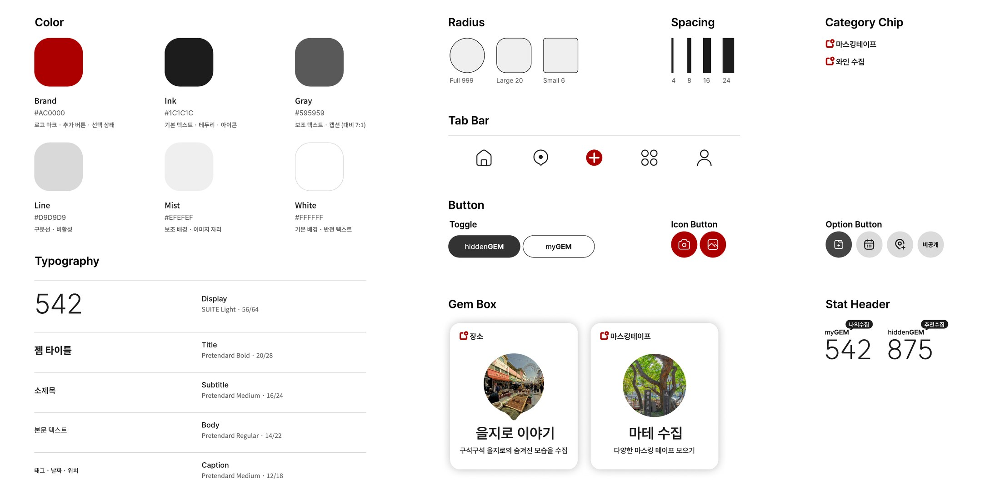
Brand, Ink, Gray, Line, Mist, White
Display부터 Caption까지
4 · 8 · 16 · 24
Full 999 · Large 20 · Small 6
출시 후에도
데이터를 보고 개선했습니다.
2025년 상반기 출시 후 Analytics와 앱 관리자 화면으로 방문자 수, 다운로드 수, 페이지뷰를 확인하며 화면을 개선했고, 현재 일부 화면을 리뉴얼해 운영 중입니다.
2025년 상반기 출시
Analytics · 앱 관리자 화면으로 방문자 수, 다운로드 수, 페이지뷰 확인
데이터를 바탕으로 한 UX 업데이트, 일부 화면 리뉴얼